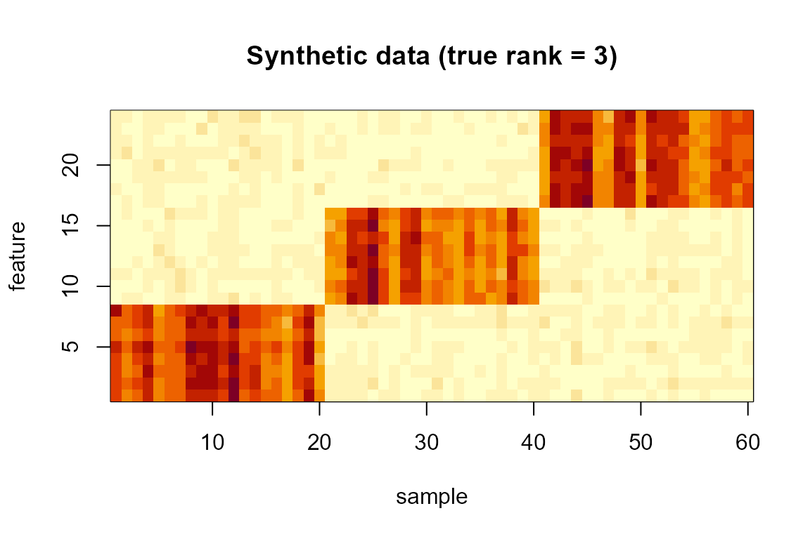
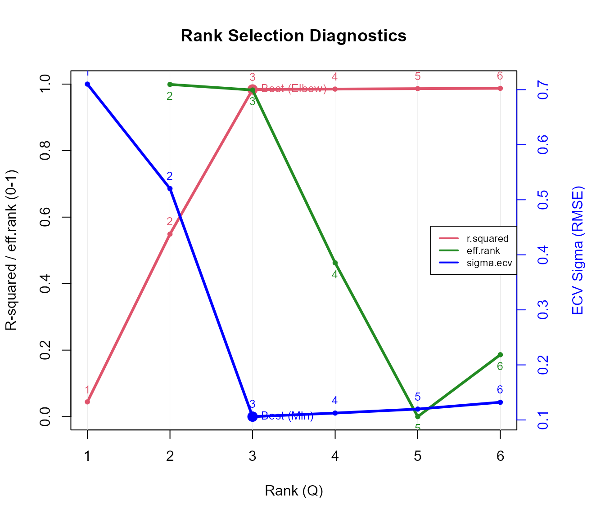
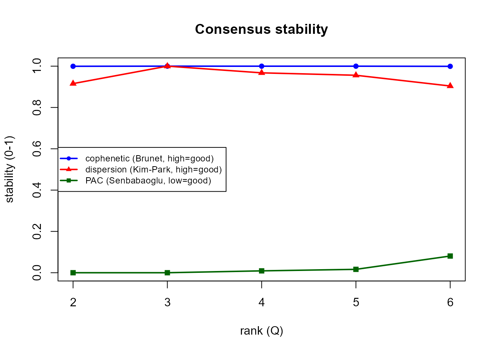
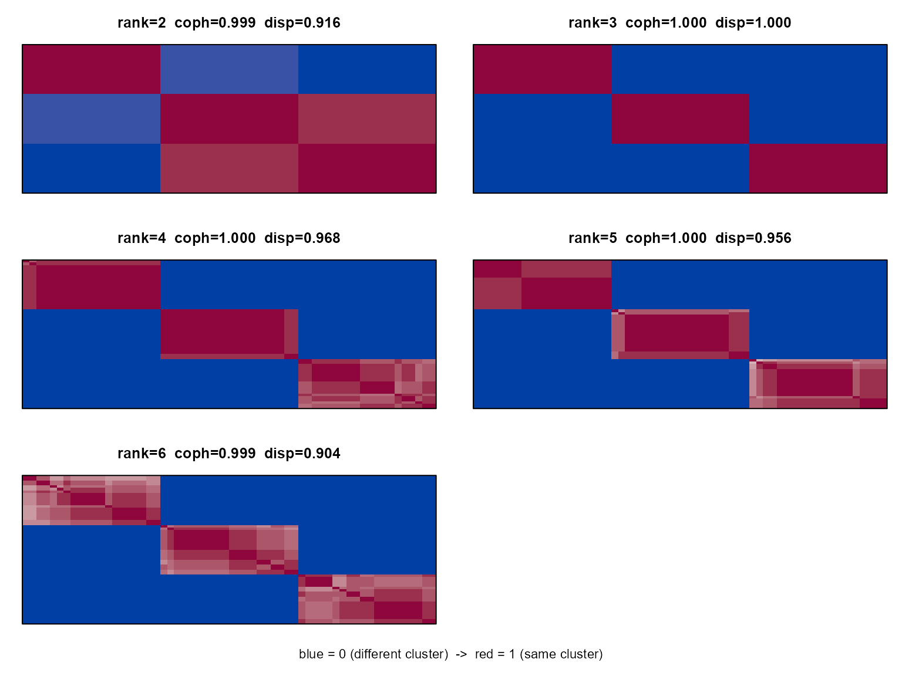
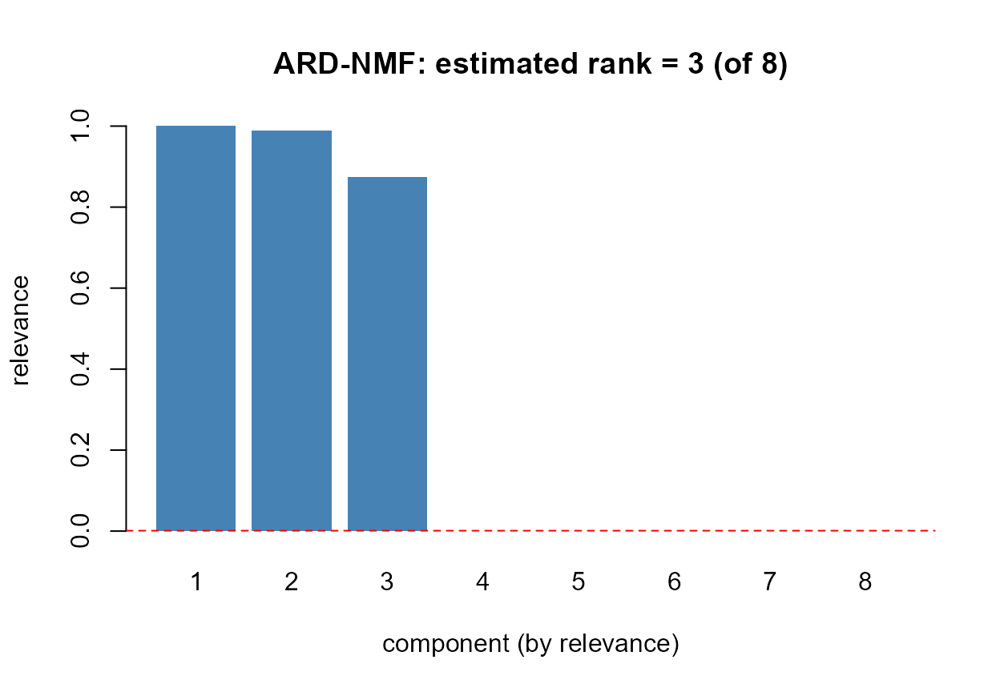
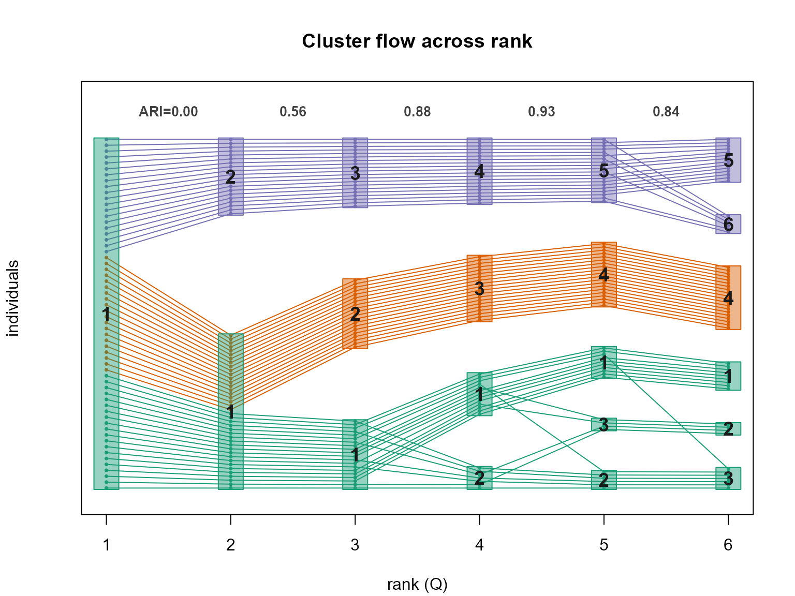

Choosing the NMF rank on data with a known true rank
Source:vignettes/rank-selection-with-nmfkc.Rmd
rank-selection-with-nmfkc.RmdIntroduction
Choosing the number of basis vectors (the rank
Q) is the central tuning problem in NMF. nmfkc
offers several rank-selection tools, each based on a different
principle:
| function | principle | a good rank… |
|---|---|---|
nmfkc.rank |
integrated diagnostics: R-squared, effective rank, element-wise CV | minimises CV error / R-squared elbow |
nmfkc.ecv |
element-wise cross-validation (Wold) | minimises held-out error |
nmfkc.bicv |
block bi-cross-validation (Owen & Perry) | minimises held-out error |
nmfkc.consensus |
clustering stability (Brunet) | maximises stability (or minimises PAC) |
nmfkc.ard |
Bayesian automatic relevance determination (Tan & Fevotte) | surviving components after pruning |
Since there is no single “best” criterion, this vignette applies all of them to a synthetic dataset whose true rank is known, so we can see which ones recover it.
A synthetic dataset (true rank = 3)
We build a non-negative 24 x 60 matrix from
three feature blocks and three sample
clusters (20 samples each), then add noise. By construction the true
rank is 3.
set.seed(123)
r_true <- 3
P <- 24 # features
n_each <- 20 # samples per cluster
N <- r_true * n_each # 60 samples
# basis: each latent factor is a distinct block of features
X <- matrix(0, P, r_true)
X[1:8, 1] <- 1; X[9:16, 2] <- 1; X[17:24, 3] <- 1
X <- X + matrix(runif(P * r_true, 0, 0.1), P, r_true) # small background
# coefficients: each sample loads mainly on its own cluster's factor
cl_true <- rep(1:r_true, each = n_each)
B <- matrix(runif(r_true * N, 0, 0.2), r_true, N)
for (j in seq_len(N)) B[cl_true[j], j] <- runif(1, 1, 2)
Y <- X %*% B
Y <- Y + matrix(rnorm(P * N, 0, 0.15 * mean(X %*% B)), P, N) # noise
Y[Y < 0] <- 0
dim(Y)
#> [1] 24 60
image(1:N, 1:P, t(Y), xlab = "sample", ylab = "feature",
main = "Synthetic data (true rank = 3)")
1. Integrated diagnostics: nmfkc.rank
nmfkc.rank() fits each rank and draws three curves on
one plot: R-squared (red, with a “Best (Elbow)”
marker), the broken-stick-corrected effective rank
index (green, shown for context), and the element-wise ECV
error (blue, with a “Best (Min)” marker). The recommended rank
is the ECV minimum (or the R-squared elbow).
rk <- nmfkc.rank(Y, rank = 1:6)
#> Y(24,60)~X(24,1)B(1,60)...0sec
#> Y(24,60)~X(24,2)B(2,60)...0sec
#> Y(24,60)~X(24,3)B(3,60)...0sec
#> Y(24,60)~X(24,4)B(4,60)...0sec
#> Y(24,60)~X(24,5)B(5,60)...0sec
#> Y(24,60)~X(24,6)B(6,60)...0sec
#> Running Element-wise CV (this may take time)...
#> Performing Element-wise CV for Q = 1,2,3,4,5,6 (5-fold)...
#> Note: sample-clustering quality (silhouette / CPCC / dist.cor) is not part of rank selection; compute it from a list of fits with nmf.cluster.criteria(). See ?nmf.cluster.criteria
rk$rank.best # recommended rank (ECV minimum)
#> [1] 3
round(rk$criteria, 3)
#> rank effective.rank effective.rank.ratio r.squared sigma.ecv
#> 1 1 NA NA 0.044 0.710
#> 2 2 2.000 1.000 0.549 0.520
#> 3 3 2.988 0.996 0.984 0.106
#> 4 4 3.438 0.860 0.985 0.113
#> 5 5 3.440 0.688 0.986 0.120
#> 6 6 4.587 0.764 0.987 0.132
#> effective.rank.expected effective.rank.index
#> 1 1.000 NA
#> 2 1.649 0.999
#> 3 2.301 0.982
#> 4 2.955 0.462
#> 5 3.609 0.000
#> 6 4.263 0.1862. Cross-validation: nmfkc.ecv and
nmfkc.bicv
Both are predictive engines that return the held-out error per rank;
the recommended rank minimises it. nmfkc.ecv holds out
scattered entries (Wold’s CV); nmfkc.bicv holds
out a block of rows and columns at once (Owen & Perry).
ev <- nmfkc.ecv (Y, rank = 1:6)
#> Performing Element-wise CV for Q = 1,2,3,4,5,6 (5-fold)...
bv <- nmfkc.bicv(Y, rank = 1:6) # nfolds = 2 (Owen & Perry) by default
#> bi-CV: ranks 1,2,3,4,5,6, 2x2 fold grid (Owen-Perry 2009)...
data.frame(rank = 1:6,
sigma.ecv = round(ev$sigma, 3),
sigma.bicv = round(bv$sigma, 3))
#> rank sigma.ecv sigma.bicv
#> Q=1 1 0.710 0.725
#> Q=2 2 0.520 0.531
#> Q=3 3 0.106 0.110
#> Q=4 4 0.113 0.111
#> Q=5 5 0.120 0.111
#> Q=6 6 0.132 0.111
cat("ECV picks rank", which.min(ev$sigma),
"| bi-CV picks rank", bv$rank[which.min(bv$sigma)], "\n")
#> ECV picks rank 3 | bi-CV picks rank 33. Clustering stability: nmfkc.consensus
For each rank, NMF is run many times from random initialisations and
the reproducibility of the sample clustering is summarised by
cophenetic (Brunet), dispersion (Kim &
Park; higher = crisper) and pac (Senbabaoglu; lower = less
ambiguous).
cs <- nmfkc.consensus(Y, rank = 2:6, nrun = 20, keep.consensus = TRUE)
#> consensus: ranks 2,3,4,5,6, 20 runs/rank (Brunet 2004); 100 fits total...
cs
#> Consensus rank selection (Brunet 2004), 20 runs/rank
#> best: dispersion max = rank 3 | PAC min = rank 2
#> rank cophenetic dispersion pac
#> 2 0.999 0.916 0.000
#> 3 1.000 1.000 0.000
#> 4 1.000 0.968 0.009
#> 5 1.000 0.956 0.016
#> 6 0.999 0.904 0.081
plot(cs) # stability curves
Each panel is the consensus matrix at one rank, reordered by hierarchical clustering (blue = 0 / different cluster, red = 1 / same cluster):
plot(cs, type = "heatmap") # all ranks
A striking point: the consensus stays essentially three crisp
blocks even at ranks 4–6. The surplus basis vectors do
not create new reproducible clusters — at
ranks 4–5 they stay near-empty (the hard clustering still uses only
three factors), and at rank 6 a cluster splits only erratically
across restarts, which averages out (just a few intermediate, pink
entries, and a small drop in dispersion / rise in
PAC). So consensus reveals the genuine stable structure
(3) robustly, even when the rank is
over-specified — a useful property. (Use
plot(cs, type = "heatmap", rank = 3) to enlarge a single
rank with sample labels.)
4. Bayesian ARD: nmfkc.ard
ARD fits NMF once at an over-complete rank and
prunes unneeded components automatically; the relevance bar plot is read
like a scree plot (look for the knee). Because it is a sensitive point
estimate, we aggregate over several random restarts
(nrun).
ar <- nmfkc.ard(Y, rank = 8, nrun = 20) # >=10-20 restarts for a stable mode
ar # see "rank over runs" for confidence
#> ARD-NMF rank determination (Tan-Fevotte 2013, L2 prior, 20 runs)
#> starting rank: 8 -> estimated rank (mode): 3
#> rank over runs: 3:20 (median 3)
#> relevance (representative run): 1 0.989 0.875 0 0 0 0 0
plot(ar)
Summary: did they recover the true rank?
data.frame(
method = c("nmfkc.rank (ECV)", "nmfkc.ecv", "nmfkc.bicv",
"nmfkc.consensus (dispersion)", "nmfkc.consensus (PAC)",
"nmfkc.ard"),
estimate = c(rk$rank.best,
which.min(ev$sigma),
bv$rank[which.min(bv$sigma)],
cs$rank[which.max(cs$dispersion)],
cs$rank[which.min(cs$pac)],
ar$rank),
true = r_true
)
#> method estimate true
#> 1 nmfkc.rank (ECV) 3 3
#> 2 nmfkc.ecv 3 3
#> 3 nmfkc.bicv 3 3
#> 4 nmfkc.consensus (dispersion) 3 3
#> 5 nmfkc.consensus (PAC) 2 3
#> 6 nmfkc.ard 3 3How the clustering evolves with rank
A complementary view: nmf.cluster.flow() draws a Sankey
/ alluvial diagram of how the hard sample clustering changes as the rank
grows. We fit ranks 1:6 (so the list index equals the rank)
and colour the flows by the clustering at the true
rank, reference = 3. The adjacent-rank ARI
(agreement) is printed along the top.
fits <- lapply(1:6, function(q) nmfkc(Y, Q = q, print.dims = FALSE))
fl <- nmf.cluster.flow(fits, reference = 3)
head(fl$clusters) # rows = individuals, columns = rank, entries = cluster id
#> 1 2 3 4 5 6
#> i1 1 1 1 2 2 3
#> i2 1 1 1 2 3 2
#> i3 1 1 1 1 1 1
#> i4 1 1 1 1 1 1
#> i5 1 1 1 1 1 1
#> i6 1 1 1 1 3 2At rank = 1 all 60 samples form a single group; at
rank = 3 they split cleanly into the three true clusters
(20 each); beyond that the groups over-split (the ARI to the next rank
starts to fall) — visual confirmation that 3 is the right
number of basis vectors here.
Remarks
On this clean dataset with a clear rank-3 structure, almost
every criterion recovers the true rank: the predictive
cross-validations (nmfkc.ecv, nmfkc.bicv), the
integrated nmfkc.rank, the consensus
dispersion (with a crisp three-block consensus matrix) and
ARD (every nrun restart agrees on 3, relevance
dropping to zero after the third component) all give 3.
Only PAC leans to the coarser rank 2 — a small
hint of the low-rank bias of stability measures.
On real data the criteria often disagree much more: stability/consensus tends to favour low (coarse) ranks, and ARD’s count can track the starting rank when the energy spectrum decays smoothly (no clear knee). A robust practical recipe is to triangulate: use ECV for the predictive upper bound, the effective-rank / relevance knee for the lower bound, and the consensus heatmap to confirm an interpretable block structure — then choose one rank by purpose and domain knowledge.
See ?nmfkc.rank, ?nmfkc.ecv,
?nmfkc.bicv, ?nmfkc.consensus and
?nmfkc.ard (all cross-referenced) for details.